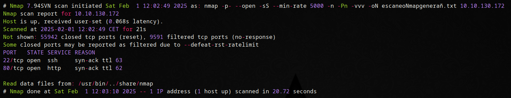
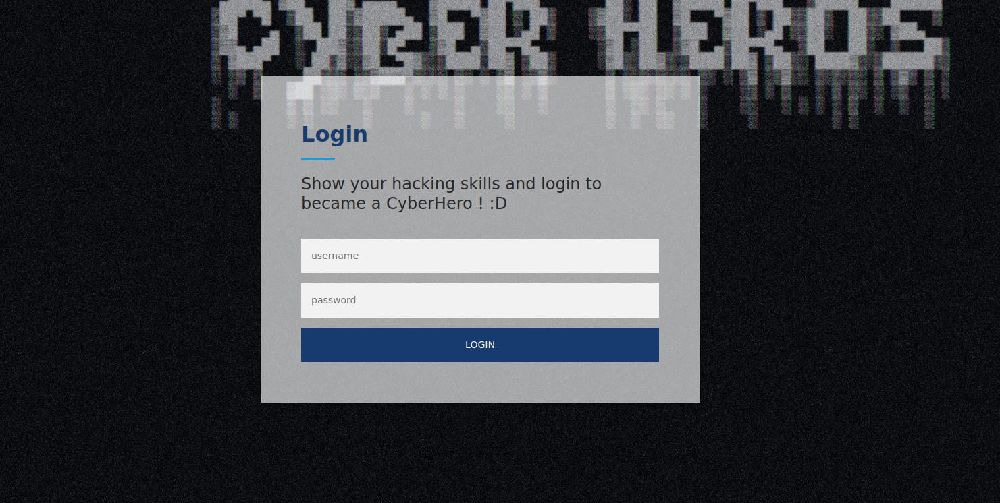
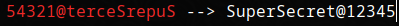

CyberHeroes Writeup
Introducción
Hoy les traigo una máquina de TryHackMe muy fácil, recomendada para quienes están comenzando en ciberseguridad, llamada "Cyberheroes".
En este post abordaremos los siguientes conceptos:
- Information Leakage
Intrusión
Comenzamos con un escaneo utilizando Nmap:
Observamos que el puerto 80 está abierto, y en él se está ejecutando una página web con un formulario de login:
Al revisar el código fuente de la página, encontramos un script en JavaScript que utiliza una condición para procesar el login:
- Si el campo de "username" es igual a "h3ck3rBoi" y el campo de "password" es igual a "54321@terceSrepuS" (pero en reversa), el login será exitoso.
Si cumplimos con esta condición, el login se completa con éxito.

Cambiamos el orden de los caracteres en el campo de "password" para descubrir la contraseña.
Ahora tenemos las credenciales necesarias para acceder al sitio web, donde podemos ver la flag.

Conclusión
Como pueden ver, esta es una máquina muy sencilla de resolver. Para quienes están comenzando en ciberseguridad, recomiendo mucho intentar resolverla.